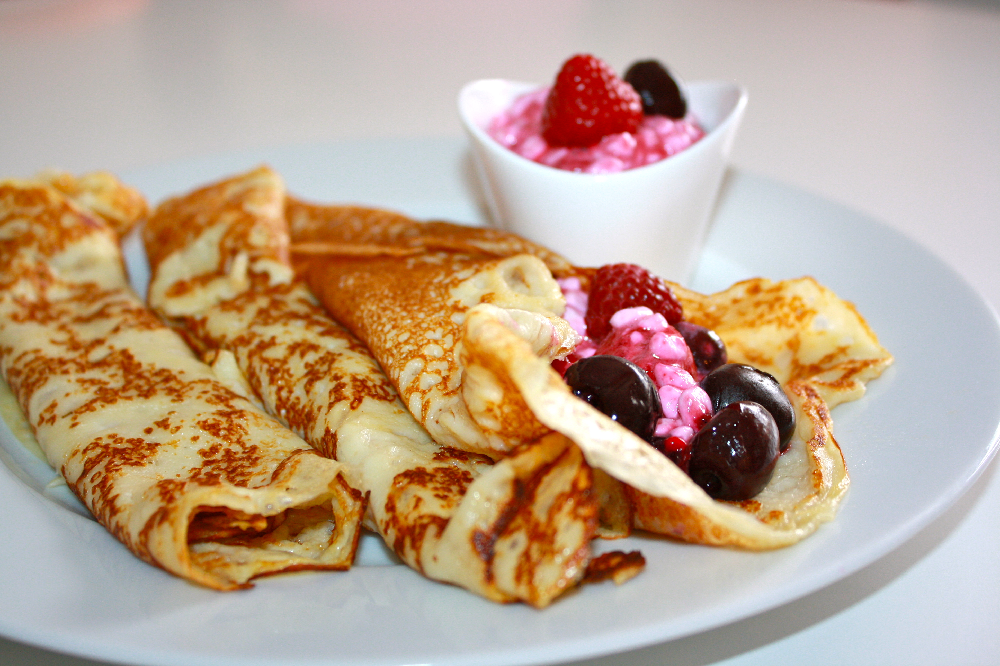

Cook time: 10 min, Preparations: 10 min, Serves: 4, Skill: easy
Ingredients
- 4 egg
- 2 cup milk
- 1⁄2 cup all-purpose flour
- 1 tbsp sugar
- 1 pinch salt
- 2 tbsp butter, melted
Method
- In a large bowl, beat eggs with a wire whisk. Mix in milk, flour,
sugar, salt, and melted butter. The batter will be thin.
- Preheat a medium non-stick electric skillet to medium heat.
Pour a thin layer of batter in the middle of the skillet,
then quickly tilt and swirl to evenly coat the bottom.
Cook until the top surface appears dry and the edges begin to
pull away from the pan. Flip with a spatula and cook for
another 2 minutes or until golden brown. Transfer to a plate,
keep warm, and repeat with remaining batter.